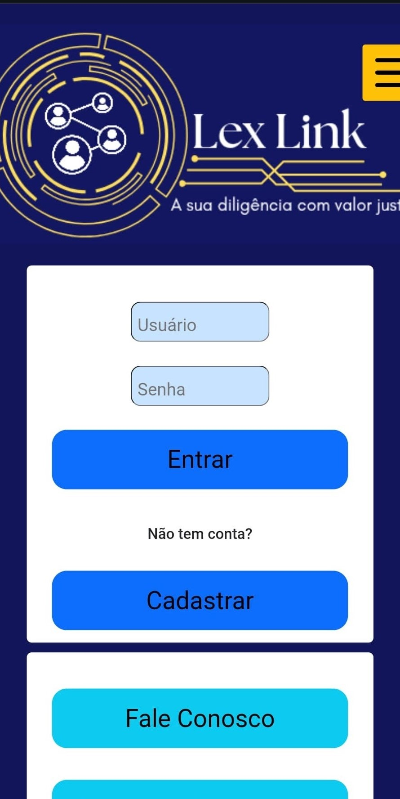
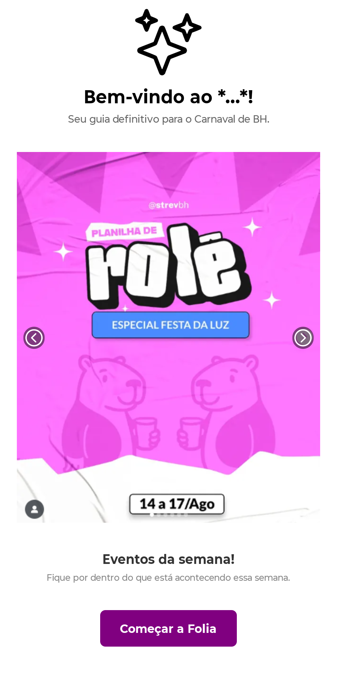
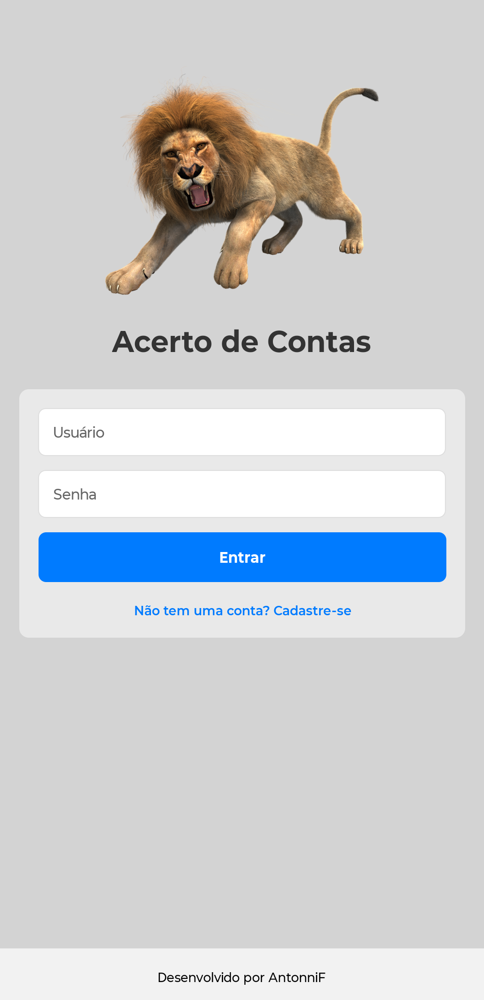
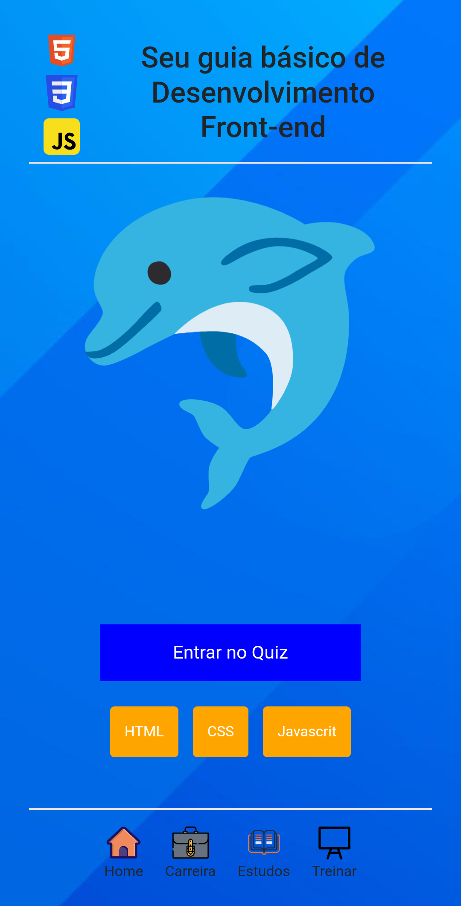
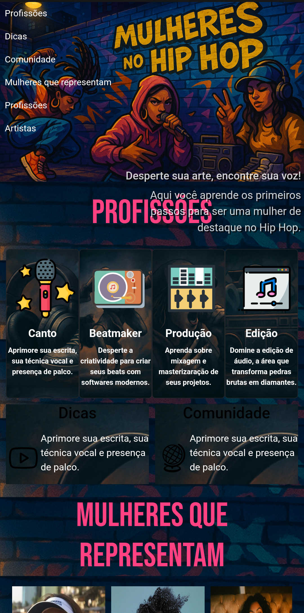
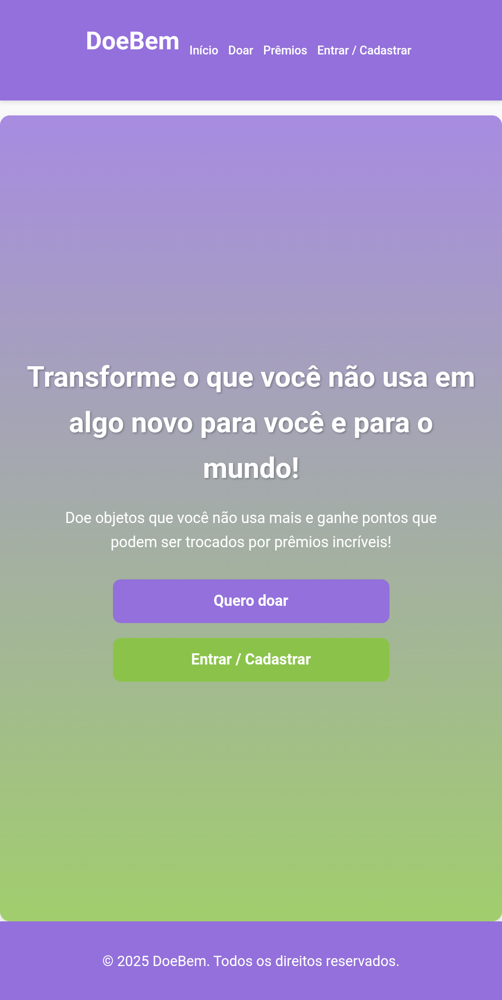
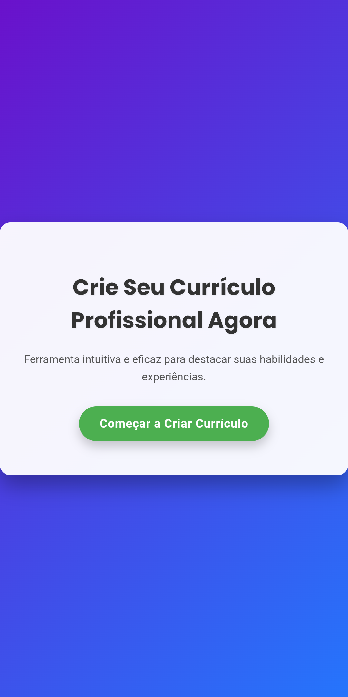
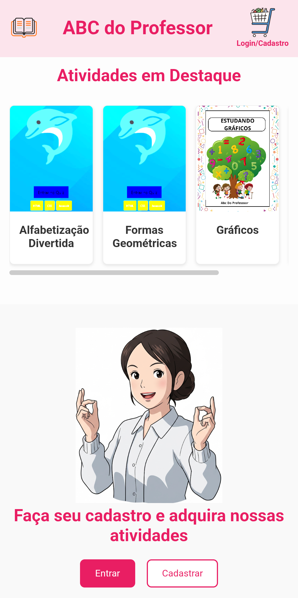
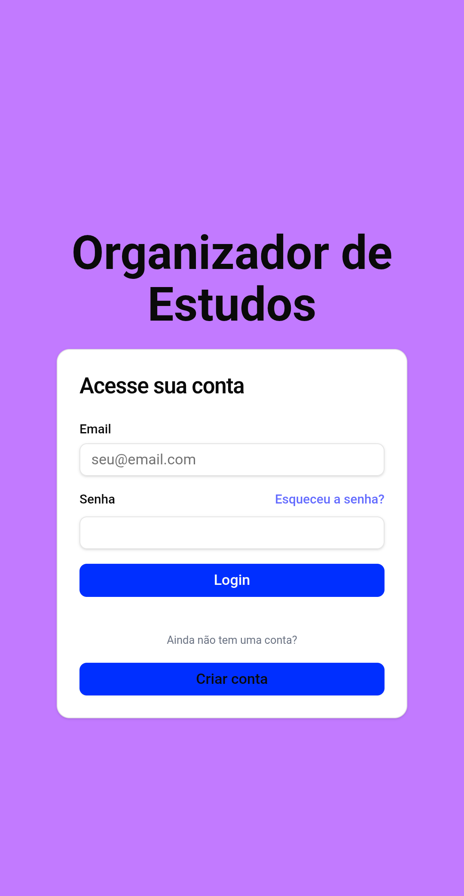
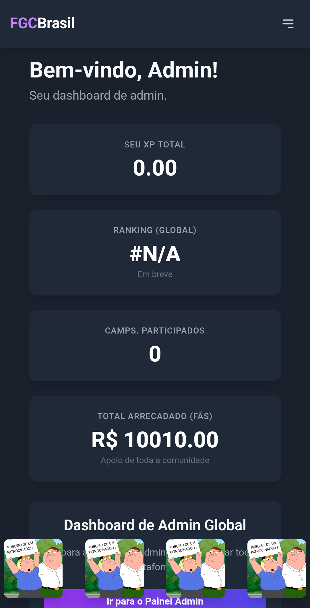

O Lex Link é uma plataforma web que aproxima empresas que precisam realizar diligências jurídicas de parceiros especializados prontos para executá-las, tudo de forma simples, organizada e supervisionada por um administrador.

O Blocos de Carnaval BH é um aplicativo leve e divertido que ajuda foliões a encontrarem os melhores blocos de rua durante o carnaval de Belo Horizonte.

é um aplicativo criado para ajudar pessoas a organizarem suas finanças pessoais de forma prática e visual, permitindo o controle de gastos e cobranças em um único lugar.

O Quiz Frontend é um jogo interativo voltado para quem quer testar e aprimorar seus conhecimentos em HTML, CSS e JavaScript de forma divertida.

O projeto Mulheres no Hip Hop nasceu para celebrar e fortalecer a presença feminina na cultura hip hop, valorizando artistas, produtoras e criadoras que fazem parte desse movimento.

é uma plataforma pensada para aproximar quem quer ajudar de quem precisa de ajuda, facilitando o processo de doações e engajamento social de forma transparente e prática.

O Gerador de Currículo Online foi criado para facilitar a vida de quem precisa montar um currículo profissional rapidamente, sem depender de editores complexos.

O ABC do Professor é um projeto educacional que auxilia docentes na criação de atividades, planejamentos e recursos interativos voltados ao ensino infantil e fundamental.

O Lex Link é uma plataforma web que aproxima empresas que precisam realizar diligências jurídicas de parceiros especializados prontos para executá-las, tudo de forma simples, organizada e supervisionada por um administrador.

O Lex Link é uma plataforma web que aproxima empresas que precisam realizar diligências jurídicas de parceiros especializados prontos para executá-las, tudo de forma simples, organizada e supervisionada por um administrador.